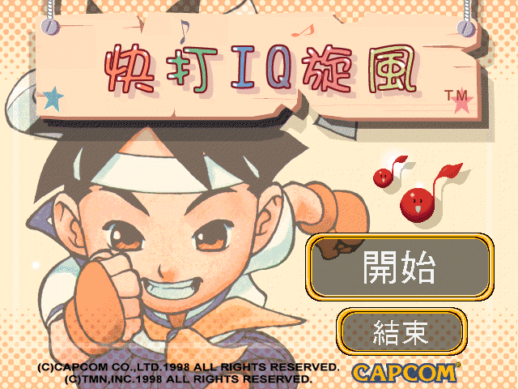
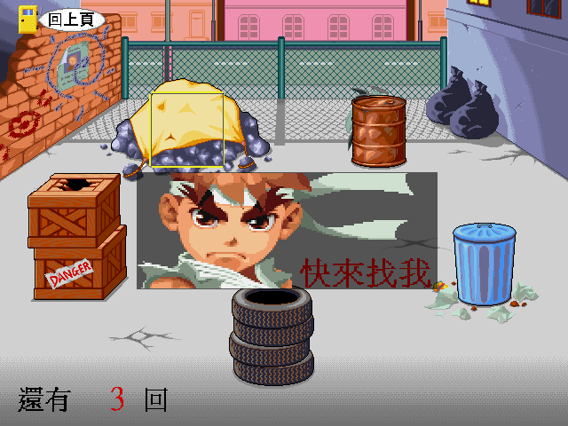
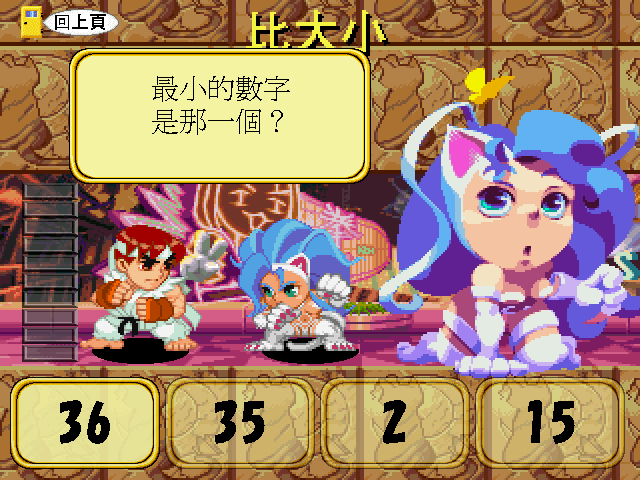

名稱：快打IQ大出擊／快打IQ旋風 (中文版)
簡介：CAPCOM 1998年出品的幼童認識數字教學軟體，附有幾個小遊戲，由程天資訊中文化，
並由草莓資訊發行 [待補]。



保護：無，直接在光碟上執行
備註：本遊戲有1998-7-10和1998-8-13兩種光碟，尚不清楚其差異。
備註：安裝或執行時若有誤判剩餘記憶體情形，可進行下列修改：
SETUP.EXE, STAR.EXE
3D 20 75 38 00 7D
-- -- -- -- -- EB